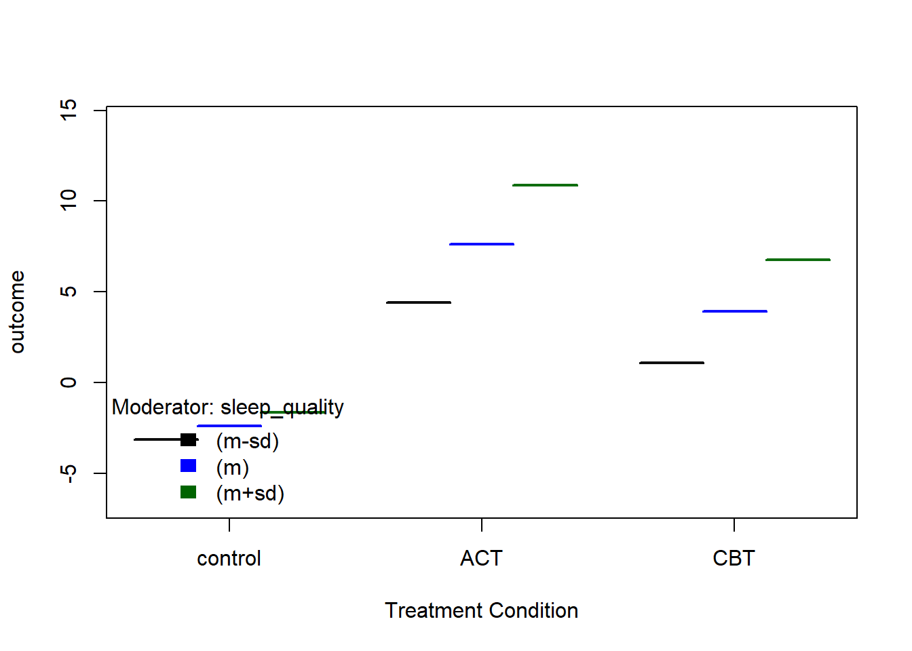
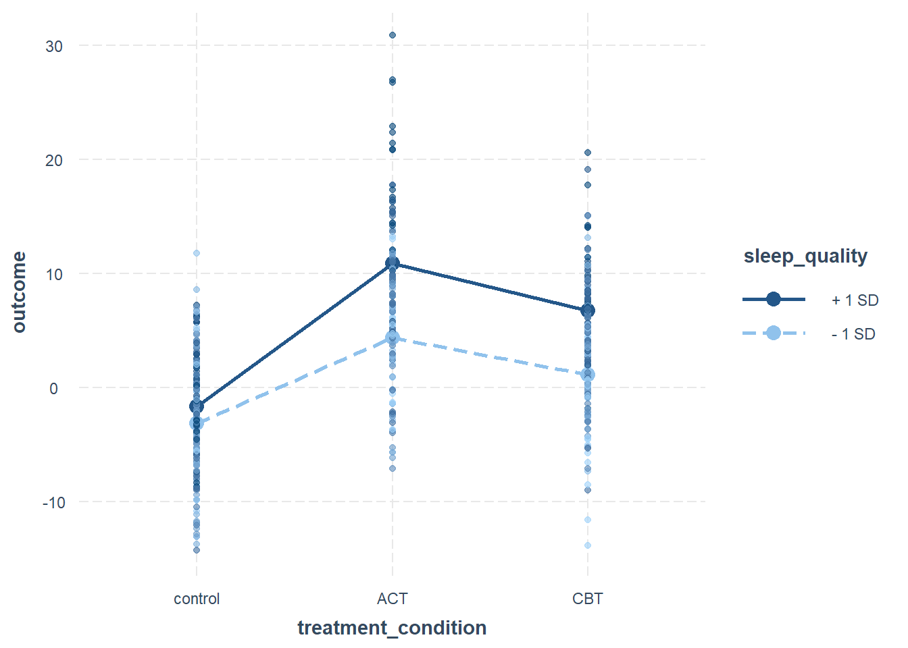

Research Methods 1: Doctorate in Clinical Psychology
For this exercise you will need to download the following dataset: data_formative26.csv
Right click and select Save link as… to download the file. Save it in the same folder as your script.
Research Overview
A research team is investigating the effectiveness of different psychological treatments on improving mental health outcomes. 500 participants were randomly assigned to one of three conditions: Treatment as Usual (Control), Cognitive Behavioral Therapy (CBT), or Acceptance and Commitment Therapy (ACT).
The primary outcome is a change score (post-treatment minus pre-treatment scores); higher values indicate greater improvement. The team also collected data on Sleep Quality, Stress Level, and Age.
Recent literature suggests that while stress is a known factor in recovery, the effectiveness of specific therapies might actually depend on the participant’s sleep quality. The team wants you to analyze the data to determine how these variables interact to predict patient improvement.
Questions
Descriptive Statistics: Report the mean and standard deviation of the outcome scores for each of the three treatment conditions.
Answer: Here we can use one of several approaches to calculate the mean and standard deviation by group. One approach is to use the dplyr (also present in the tidyverse) package to group the data by treatment condition and then summarize the mean and standard deviation for each group.
Another approach is to use the descriptive statistics functions from the psych package:
library(psych)describeBy(formative_data$outcome, group = formative_data$treatment_condition)
Descriptive statistics by group
group: ACT
vars n mean sd median trimmed mad min max range skew kurtosis se
X1 1 146 7.81 7.09 8 7.65 5.92 -7.13 30.89 38.01 0.32 0.33 0.59
------------------------------------------------------------
group: CBT
vars n mean sd median trimmed mad min max range skew kurtosis se
X1 1 176 3.45 5.66 3.15 3.42 5.25 -13.86 20.61 34.47 0.08 0.47 0.43
------------------------------------------------------------
group: control
vars n mean sd median trimmed mad min max range skew kurtosis se
X1 1 178 -2.07 5.38 -1.78 -1.99 5.64 -14.25 11.8 26.05 -0.07 -0.58 0.4
Sample Characteristics: The known population average for sleep quality is 55. Based on your sample’s mean and standard deviation, how do these participants compare to the general population?
Answer: To compare the sample’s mean sleep quality to the known population average, we can calculate the sample mean and standard deviation for sleep quality and then compare it to the population average of 55.
# Now we can compare the sample mean to the population average
We might also consider conducting a one-sample t-test to see if the sample mean significantly differs from the population mean:
t_test_result <-t.test(formative_data$sleep_quality, mu =55)t_test_result
One Sample t-test
data: formative_data$sleep_quality
t = -13.266, df = 499, p-value < 2.2e-16
alternative hypothesis: true mean is not equal to 55
95 percent confidence interval:
48.75724 50.36784
sample estimates:
mean of x
49.56254
Data Filtering: The research team has decided to restrict their analysis to adults aged 18–65. Filter the dataset accordingly and provide the updated mean and standard deviation for the outcome scores by group.
Answer: We can filter the dataset to include only participants aged 18 to 65 and then recalculate the mean and standard deviation for the outcome scores by treatment group.
Model Building: Conduct an analysis to investigate the researchers’ main questions. You should use an approach that allows you to see the incremental contribution of treatment groups, covariates, and interactions.
Answer: We can use hierarchical multiple regression to investigate the effects of treatment groups, covariates (sleep quality and stress level), and their interactions on the outcome scores. We will build five models (including the null model) to see the incremental contribution of each set of predictors:
# Null modelmodel0 <-lm(outcome ~1, data = filtered_data)# Model 1: Treatment onlymodel1 <-lm(outcome ~ treatment_condition, data = filtered_data)# Model 2: Treatment + stressmodel2 <-lm(outcome ~ treatment_condition + stress_level, data = filtered_data)# Model 3: Treatment + stress + sleepmodel3 <-lm(outcome ~ treatment_condition + sleep_quality + stress_level, data = filtered_data)# Model 4: Full model with interactionmodel4 <-lm(outcome ~ treatment_condition * sleep_quality + stress_level, data = filtered_data)
We then need to compare the models using ANOVA and check the summary of each model:
Covariate Influence: Does the initial level of stress significantly influence the improvement in mental health scores?
Answer: To determine if the initial level of stress significantly influences the improvement in mental health scores, we can examine the coefficients and p-values for the stress_level variable in the regression models that include it (Model 3 and Model 4). We might also want to run a model where sleep is not included to isolate the effect of stress.
Treatment Interaction: Does the data support the idea that the effectiveness of CBT or ACT is dependent on a participant’s sleep quality? Explain your reasoning using your model’s output.
Answer: To assess whether the effectiveness of CBT or ACT depends on sleep quality, we need to look at the interaction terms between treatment and sleep quality in Model 4. If the interaction terms are statistically significant (p < .05), this would suggest that the effect of treatment on outcome scores varies depending on sleep quality. We can interpret the coefficients to understand how sleep quality modifies the treatment effects. Since sleep definitely interacts with treatment, we can say that the answer is yes.
Moderation Effects: If a relationship exists between treatment and sleep quality, identify the specific conditions under which sleep quality significantly predicts the outcome.
Answer: To identify the specific conditions under which sleep quality significantly predicts the outcome, we can use the rockchalk package to plot the slopes of the interaction between treatment condition and sleep quality. This will help visualize how sleep quality affects the outcome for each treatment group.
It it also possible to use the interactions package to create interaction plots and test the slopes for significance.
However, to test the points of significance with a categorical variable on the x-axis, we need to use the emmmeans package to probe the interaction further.
# relevel the treatment condition to set Control as the reference groupfiltered_data$treatment_condition <-as.factor(filtered_data$treatment_condition)filtered_data$treatment_condition <-relevel(filtered_data$treatment_condition, ref ="control")library(rockchalk)modelSleep <-lm(outcome ~ treatment_condition * sleep_quality + stress_level, data = filtered_data)## plot the interactionsps <-plotSlopes(modelSleep, plotx ="treatment_condition", modx ="sleep_quality", modxVals ="std.dev.", # This picks Mean, +1SD, and -1SDxlab ="Treatment Condition", )

# alternative approach library(interactions)interact_plot(modelSleep, pred = treatment_condition, modx = sleep_quality, modx.values ="plus-minus", # Plots Mean +/- 1 SDplot.points =TRUE)

# using emmeans to understand the significant differenceslibrary(emmeans)# most basic versionemmeans_results <-emmeans(modelSleep, ~ treatment_condition * sleep_quality)# pairwise comparisonspairs(emmeans_results)
contrast
control sleep_quality49.4598275862069 - ACT sleep_quality49.4598275862069
control sleep_quality49.4598275862069 - CBT sleep_quality49.4598275862069
ACT sleep_quality49.4598275862069 - CBT sleep_quality49.4598275862069
estimate SE df t.ratio p.value
-10.02 0.613 457 -16.335 <.0001
-6.31 0.595 457 -10.614 <.0001
3.71 0.625 457 5.930 <.0001
P value adjustment: tukey method for comparing a family of 3 estimates
The code above will help identify the specific conditions (i.e., levels of sleep quality) under which sleep quality significantly predicts the outcome for each treatment group. The first selection is mean - 1 SD, the second is the mean, and the third is mean + 1 SD. It is up to you to specify which levels are meaningful for your analysis, but for this example, the three levels are consistent with the previous plots.
The pairwise comparisons will then compare each combination of treatment condition and sleep quality level to see where significant differences are.
Synthesis: Provide a brief interpretation of your findings regarding the effectiveness of these treatments in relation to sleep and stress. What should the researchers conclude?
Answer: Based on the analysis, we found that treatment and stress levels significantly predict improvement in mental health scores. The interaction between treatment condition and sleep quality was also significant, indicating that the effectiveness of CBT and ACT varies depending on the participant’s sleep quality.
When conducting the moderation analysis, we observed that for participants with higher sleep quality, both CBT and ACT were more effective compared to the control group. However, for participants with lower sleep quality, the effectiveness of these treatments was diminished.
Using emmeans pairwise comparisons, we identified specific conditions under which sleep quality significantly predicted outcomes (too many significant values to list here). The interaction was generally significant across most levels of sleep quality.
Overall, this suggests that sleep quality is an important factor to consider when evaluating treatment effectiveness, even when controlling for stress levels.
Assumption Testing: Evaluate the diagnostic plots for your final model. Are there any violations that suggest we should be cautious with our interpretation?
Answer: To evaluate the diagnostic plots for the final model (Model 4), we can use the plot() function in R, which provides several diagnostic plots to assess the assumptions of linear regression, including normality of residuals, homoscedasticity, and leverage points. We can also use the mctest() package to test for multicollinearity.